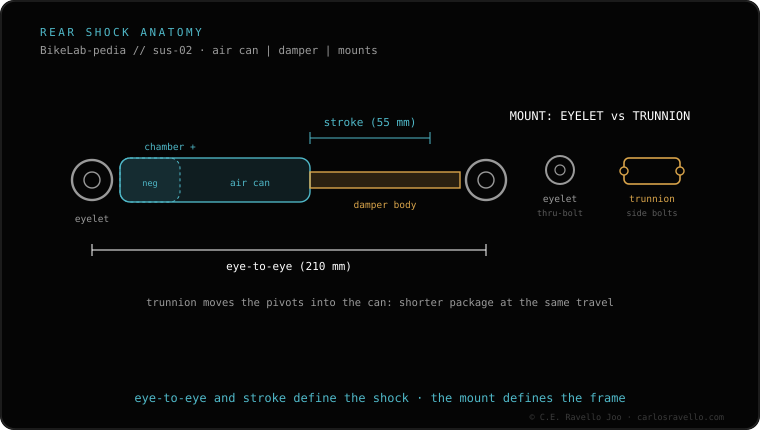

Before you fear the worst: often it's the valve (loose or dirty core) or a dry air can whose seals no longer hold. Locate the leak with soapy water on the valve and on the air-can joint. If it bubbles at the valve, tightening or replacing the core is usually enough; if it bubbles at the air can, it needs service. Confirm by measuring the SAG before and after; if the pressure drops on its own, it's a real leak. For the fork, see when it loses air.
"Losing air" sounds like replacing the shock, but it almost never is. The first thing is to know where the air is escaping, and a drop of soap tells you.
The valve. The shock uses a Schrader-type valve. If the core is loose or dirt got in, it loses air little by little. It's the simplest cause and is often fixed by tightening or replacing the core.
The dry air can. The air can has lubricated seals that hold pressure and let air pass between the positive and negative chambers in a controlled way. When they dry out or wear, they seal poorly and the pressure drops. It's the most frequent cause of an "internal" leak.
Internal damage. Less common, but a scratched body or a damaged main seal also leaks. This is already major service.
Inflate the shock to your normal pressure. Prepare soapy water and apply it to the valve and to the air-can joint (where the can threads onto the body). Cycle the shock gently and watch where bubbles appear. That's where the leak is.

If the leak comes from the air can or you notice the pressure dropping on its own between rides, the seals are dry or worn and it needs an air-can service. It's routine, cheap maintenance compared to letting it get worse. If oil also appears, the damage is greater and the damper service comes into play. Don't wait until you run out of air mid-descent.
Tell us the brand, model and how often it deflates and we'll help you locate it and decide whether it's the valve or service. Message us on WhatsApp
Almost always the valve (loose or dirty core) or a dry air can with seals that no longer hold. Internal damage is less common.
Inflate to normal pressure and apply soapy water to the valve and the air-can joint. Wherever it bubbles is the leak.
If it leaks through the air can or the pressure drops on its own, it needs an air-can service. With oil present, major service.
© 2026 BikeLab Studio. Content under CC BY 4.0: you may copy, translate and publish it, even for commercial purposes. Citation is mandatory. Without attribution, the license terminates automatically (CC BY 4.0, §6.a) and the use becomes copyright infringement: we request the removal of the content and its deindexing. · Design and ownership: Carlos Ravello Joo